Explore Hội An
A Brief History
Hội An flourished as a Cham and later Vietnamese port where Japanese, Chinese, and European merchants traded ceramics and silk. Timber shophouses, assembly halls, and covered bridge record seventeenth-century maritime exchange on the Thu Bon River estuary. Lantern-lit evenings and tailor workshops animate merchant assembly halls beside the Thu Bon estuary.
Attractions Map
Top Sights & Activities
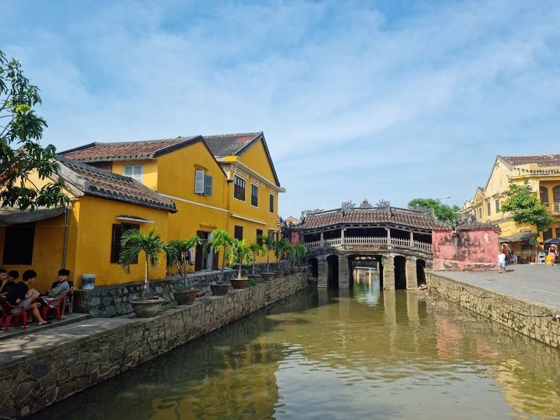
Pagoda Bridge
Chùa Cầu, also known as the Japanese Covered Bridge, is a significant landmark in Hoi An, Vietnam. Dating back to the 18th century, this wooden bridge was built by Japanese merchants to connect their quarter with the Chinese quarter. The bridge features intricate carvings and sculptures of two dogs and two monkeys, symbolizing prominent Japanese Emperors' birth years. Surrounded by ancient houses adorned with lanterns, Chùa Cầu holds cultural and historical significance.
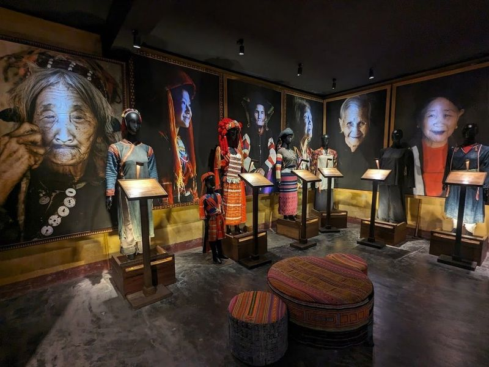
Precious Heritage Art Gallery Museum
Nestled in the heart of Hoi An, the Precious Heritage Art Gallery Museum is a captivating tribute to Vietnam's rich tapestry of ethnic cultures, curated by the talented French photographer Rehahn. This enchanting museum spans two floors; the first showcases 200 photographs that highlight the beauty and resilience of Vietnamese women and their children from various ethnic minorities.
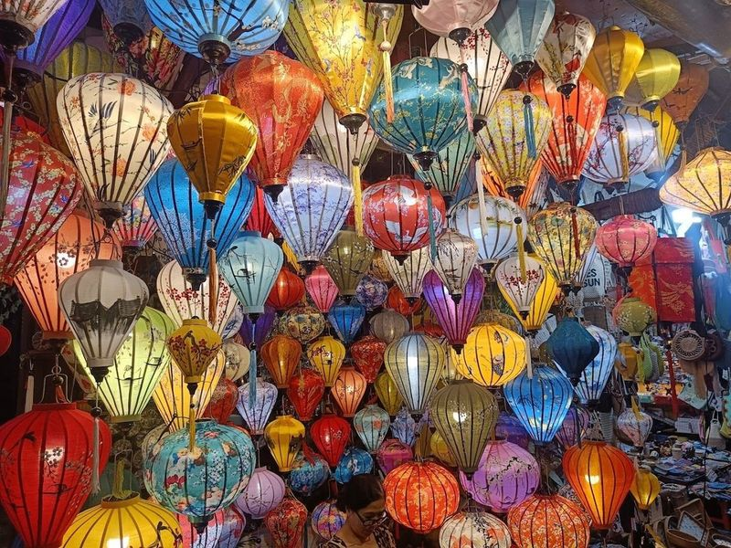
Hoi An Market
Hoi An Market is a and bustling marketplace offering a mix of indoor and outdoor vendors selling everything from produce to clothing and souvenirs. Located near the Ancient Town, it's a convenient spot to grab some local bites before exploring more of Hoi An. The market also offers a variety of traditional dishes such as Quang Noodles and local cakes like Gai Cake and Rose Cake.
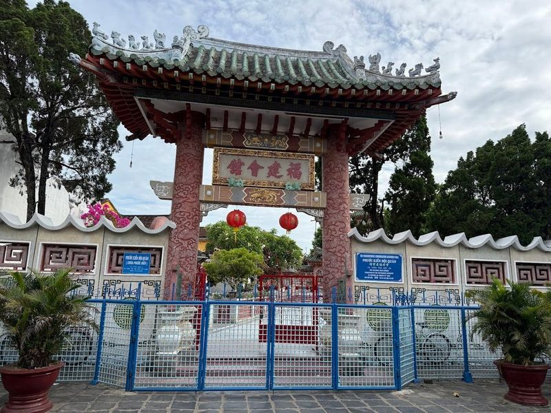
Fujian Assembly Hall
Hội Quán Phước Kiến, also known as the Fukian Assembly Hall, is a place of worship in Hoi An, Vietnam. Originally built in the 17th century as an assembly hall for the Chinese community to gather and celebrate festivals, it was later transformed into a temple dedicated to Thien Hau, a sea goddess from Fujian province.
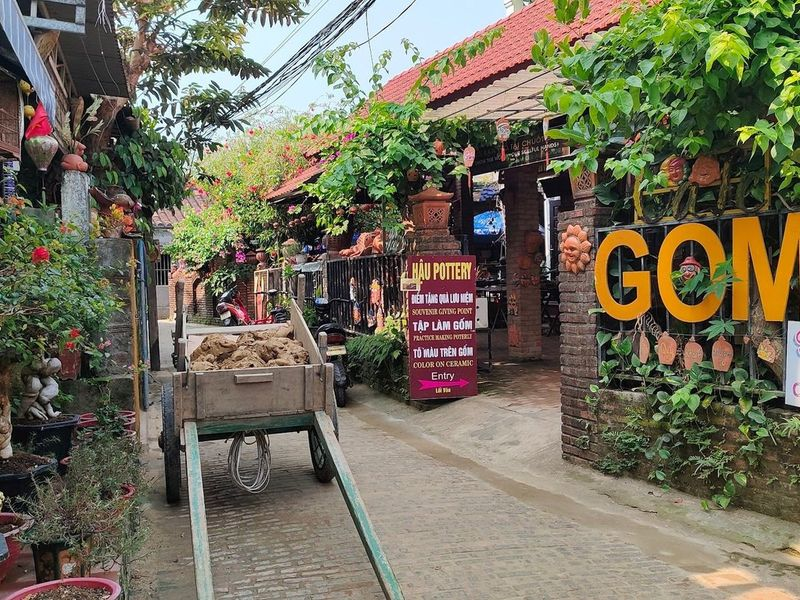
Thanh Ha Pottery Village, Hoi An
Thanh Ha Pottery Village in Hoi An is a historic craft village that has been around for over 400 years. The village features traditional pottery workshops and is known for its signature noodle dish. Visitors can explore the red-roof communal houses, yellow brick walls, dock, and banyan tree that represent a real Vietnamese traditional village.
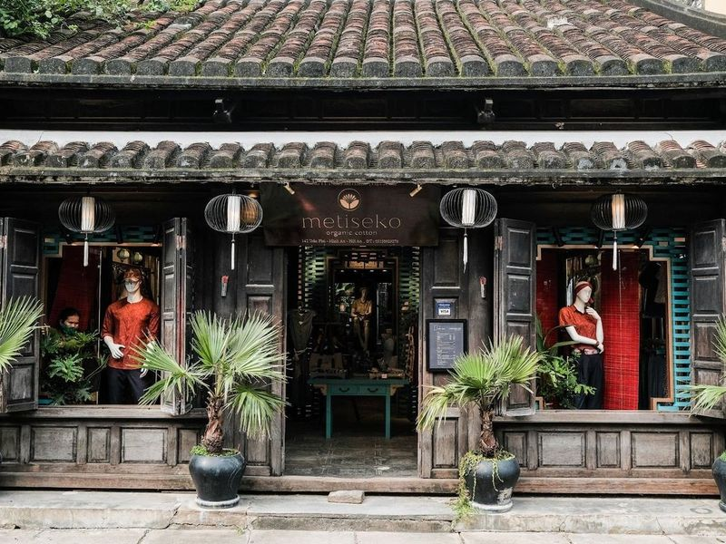
Metiseko
Metiseko is a must-visit in Hoi An, offering a collection of organic cotton and mulberry silk garments with patterns inspired by Vietnam. The brand's eco-friendly approach is evident in its use of certified organic products for clothing, home, and kitchen collections. Located in an ancient 2-story home, the boutique seamlessly blends heritage with tasteful interior design.
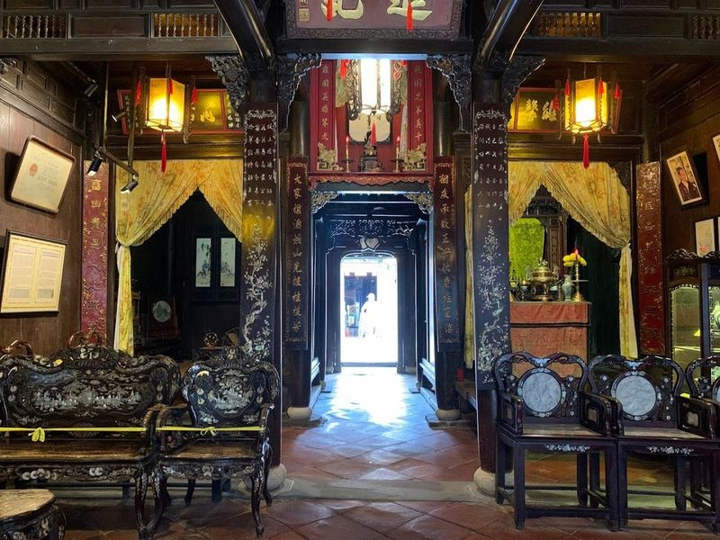
Old House of Tan Ky
Nestled in the heart of Hoi An's ancient Old Quarter, the Old House of Tan Ky is a beautifully preserved 18th-century merchant residence that offers visitors a glimpse into the past. This remarkable home showcases traditional architectural styles typical of Hoi An townhouses, featuring distinct sections for various functions. The front serves as a shop while the back connects to the river wharf, highlighting its historical role in trade.
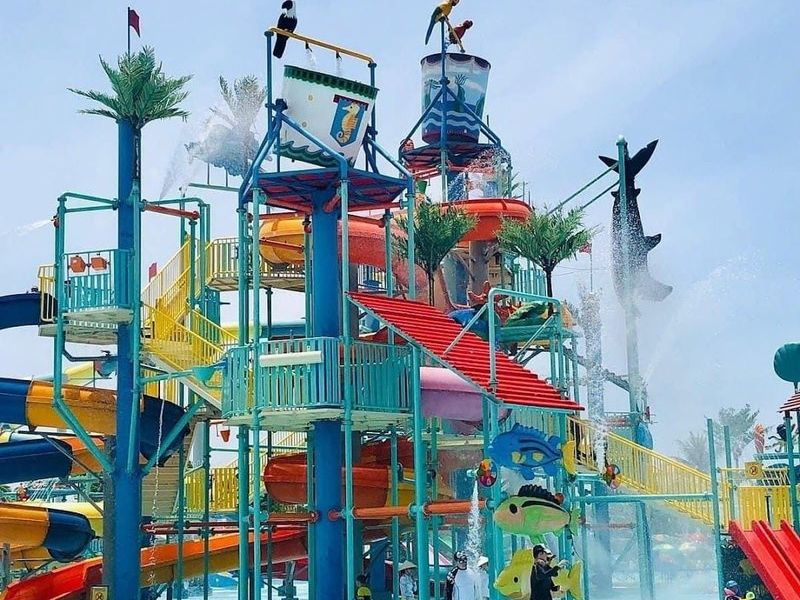
VinWonders Nam Hội An
VinWonders Nam Hoi An is a popular theme park in Quang Nam, offering a wide range of entertainment options for tourists. The park features thrilling rides, beautiful landscapes, and well-maintained facilities. Visitors can enjoy various activities such as safari tours, roller coasters, cultural village exploration, and indoor arcade games. The friendly staff provides excellent service and the park offers dining options with good prices.
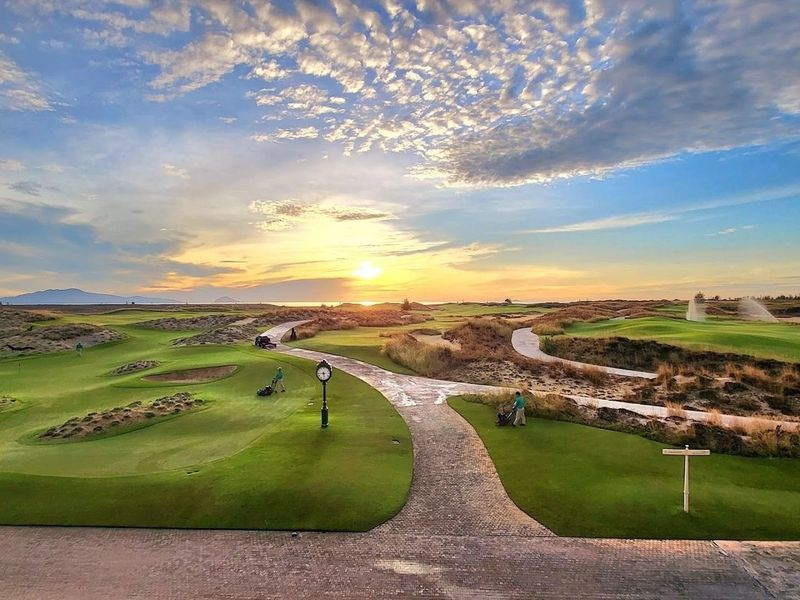
Hoiana Shores Golf Club
Nestled within the New World Hoiana Beach Resort, Hoiana Shores Golf Club stands out as a premier golfing destination in Vietnam. This remarkable course, designed by the renowned Robert Trent Jones Jr., offers golfers an experience with its links-style layout that harmonizes beautifully with the coastal landscape.
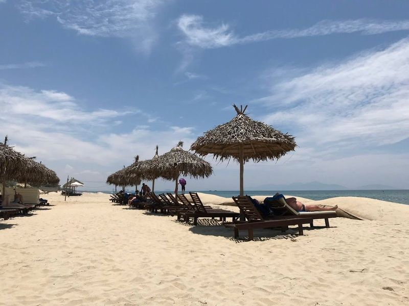
An Bang Beach
An Bang Beach, located just 3 kilometers east of Hoi An, is a serene escape that beautifully combines natural beauty with local charm. This picturesque beach features soft white sands and crystal-clear turquoise waters, making it an ideal spot for sunbathing or enjoying the gentle waves. The area is lined with charming beach huts and offers a variety of eateries where savor fresh seafood and refreshing cocktails while soaking in views of Da Nang Bay and the Marble Mountains.
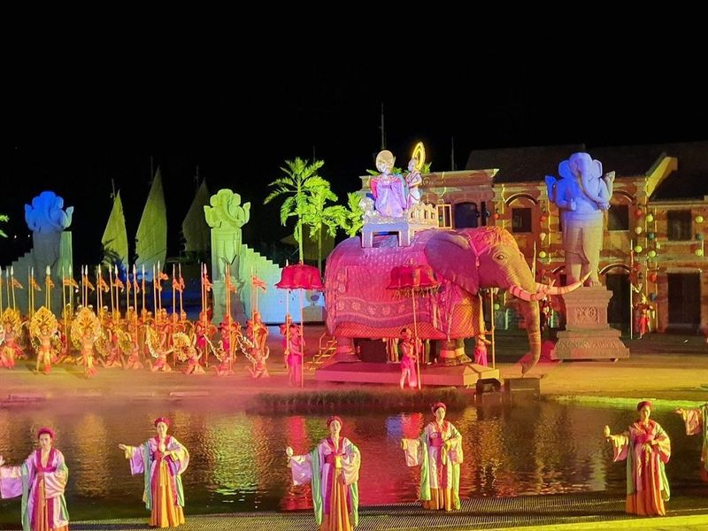
Hoi An Memories Land
Nestled in the enchanting city of Hoi An, Vietnam, Hoi An Memories Land is a captivating amusement park that opened its doors in 2018. This ancient-style park is renowned for its Golden Bridge, supported by giant hands—an ideal spot to soak in sunset views. As night falls, visitors can immerse themselves in the grand live performance known as 'Hoi An Memories,' which takes place from 8 PM to 9 PM daily (except Tuesdays).